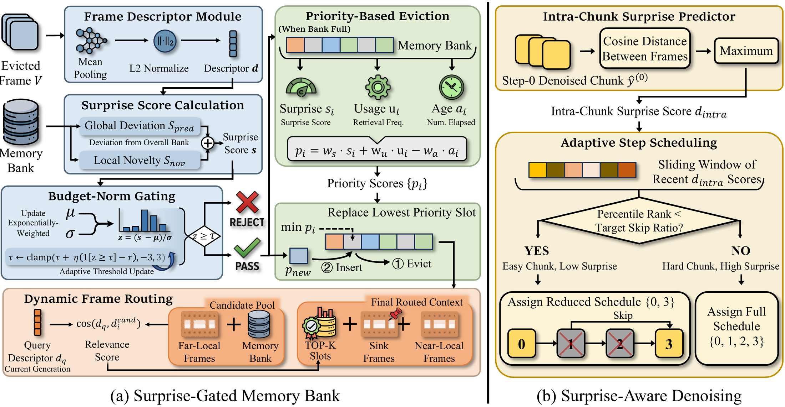
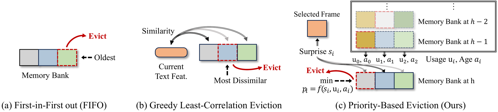

Our key insight is that a model can use its own internal signals to estimate informativeness and difficulty: only frames that are surprising should be committed to long-term memory, and only chunks predicted to be hard should receive full denoising compute. Both mechanisms operate purely at inference time — no retraining or fine-tuning is required.


60-second videos generated by Surprise Forcing at 832×480 in a real-time stream, on prompts from the Movie Gen Video Bench. Videos start automatically when scrolled into view; use the controls to scrub.
PROMPTAn adorable happy otter confidently stands on a surfboard wearing a yellow lifejacket, riding along turquoise tropical waters near lush tropical islands, 3D digital render art style.
PROMPTA real girl franatically running a dense forest with bushes, trees, in rainy day, the animals are running after her and she is screaming and shouting.
PROMPTA white and orange tabby alley cat is seen darting across a back street alley in a heavy rain, looking for shelter.
Five-way comparison on a challenging 1-minute example with continuous, non-trivial motion — Surprise Forcing (Ours) vs. CausVid, Self Forcing, Rolling Forcing, and LongLive. All tiles play in lock-step; use the controls on the Ours tile to play, pause, or scrub.
“An old man wearing blue jeans and a white t-shirt taking a pleasant stroll in Antarctica during a colorful festival.” (Movie Gen Video Bench)
CausVid suffers from severe error accumulation, with noticeable color drift and quality degradation over time. Self Forcing deteriorates markedly once generation exceeds its training horizon. Rolling Forcing lets the subject drift and exit the frame, while LongLive shows frequent changes in subject details. Surprise Forcing maintains stability and subject consistency throughout, thanks to its surprise-driven memory management.
Quantitative comparisons on VBench (5 s) short videos and VBench-Long (60 s) long videos. Under comparable inference speed, our method achieves state-of-the-art performance across all metrics, and the speedup becomes more pronounced when generating longer videos.
| VBench (5 s) | VBench-Long (60 s) | |||||||
|---|---|---|---|---|---|---|---|---|
| Model | Total ↑ | Sub. Consistency ↑ | Mul. Objects ↑ | FPS ↑ | Quality ↑ | Sub. Consistency ↑ | Aesthetic ↑ | FPS ↑ |
| CausVid | 80.47 | 94.66 | 79.99 | 15.84 | 75.97 | 96.41 | 48.42 | 15.84 |
| Self Forcing | 82.12 | 96.23 | 80.22 | 15.84 | 80.53 | 97.19 | 55.98 | 15.84 |
| Rolling Forcing | 80.49 | 96.21 | 84.53 | 15.52 | 80.23 | 98.3 | 60.97 | 15.52 |
| LongLive | 80.63 | 96.19 | 84.89 | 18.01 | 80.32 | 98.42 | 61.71 | 18.01 |
| Surprise Forcing (Ours) | 83.40 | 96.28 | 87.50 | 16.45 | 81.88 | 98.51 | 63.98 | 17.18 |
@inproceedings{shi2026surpriseforcing,
title = {Surprise Forcing: What to Remember, When to Skip in Long Video Generation},
author = {Shi, Shuwei and Li, Zhen and Niu, Muyao and Li, Chuanhao and Zheng, Bo and Zhang, Kaipeng and Zheng, Yinqiang},
booktitle = {European Conference on Computer Vision (ECCV)},
year = {2026}
}